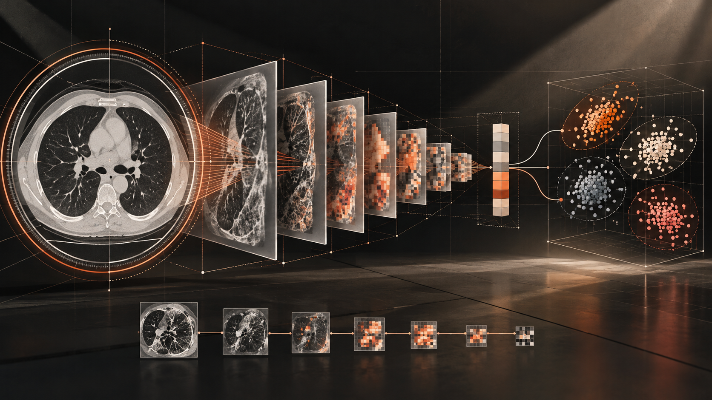

2025.10 — 2026.03
PAST EXPERIENCE / DATA AGENT
禹穗科技
AI 产品研究员
WHAT I DID
- 分析数据 Agent 的使用需求，梳理文本回答、数据展示与文件下载场景。
- 使用 Dify 设计工作流节点，编写并优化 Prompt，完成数据处理和接口调用。
- 设计柱状图、折线图等可视化输出，使自然语言筛选能够连接到结果展示。
IMPACT
01 自然语言驱动的数据筛选
02 图表展示与文件下载
03 减少后端重复方法撰写
COMPUTER VISION · IMAGE GENERATION
我目前是深圳大学计算机技术专业硕士研究生，主要研究图像生成与计算机视觉。
01 / ABOUT ME
我目前是深圳大学计算机技术专业硕士研究生，当前主要研究图像生成与计算机视觉。过去的数据科学学习和实习经历，使我接触了数据分析、模型应用以及智能系统实践。现阶段，我希望围绕图像生成相关问题深入理解生成式模型的视觉表征与生成机制，并逐步形成自己的研究方向。
EDUCATION
深圳大学
计算机技术 · 硕士研究生在读
汕头大学
数据科学与大数据技术 · 本科
CURRENT FOCUS
TECH STACK
02 / EXPERIENCE
2025.10 — 2026.03
PAST EXPERIENCE / DATA AGENT
AI 产品研究员
WHAT I DID
IMPACT
01 自然语言驱动的数据筛选
02 图表展示与文件下载
03 减少后端重复方法撰写
03 / SELECTED PROJECTS
面向数据对话场景，将自然语言筛选、文本回答、图表展示和文件下载串联成可复用的 Agent 工作流。

02 VISION融合深度可分离卷积、自注意力机制与状态空间模型，探索轻量化医学图像分类架构。
智能中药识别与检索 App，完成 RESTful 接口、收藏模块、多字段搜索与关键词高亮。
作为队伍负责人完成问卷设计、结构方程模型、K-means 聚类、IPMA 分析及数据可视化，形成面向消费决策的市场策略。
↗04 / CONTACT